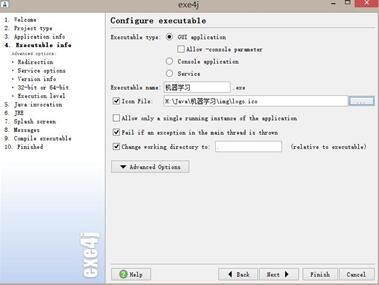
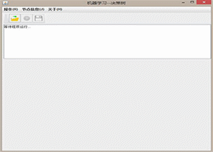

目录
- 写在前面的话
- 第一篇 在Java中调用R语言
- Rserve的安装
- Java代码的实现
- Java调用R必备的程序包
- Java连接R的语句
- 利用exe4j对程序进行打包教程
- 软件展示
- 第二篇 在R中调用Java程序(未开放)
- 在Java中调用R，有两种方式，一种是通过
Rserve包进行连接，使用这种包的原理是R作为服务器，而Java作为前台程序；另外一种是通过JNI进行动态连接。在这里我主要介绍如何利用Rserve进行连接。 - Java环境的配置以及开发工具
Eclipse的安装 - Java打包软件
exe4j的安装 - 利用
exe4j软件进行程序打包的教程
写在前面的话
Java与R的介绍
Java作为主流的应用软件开发语言，已经被广泛的应用到各种项目中；而R语言作为最主流的统计软件之一，以其广泛的程序包以及统计作图能力，受到越来越多人的青睐。如何 把两种语言完美的结合在一起，一直是我在思考的问题，经过查阅大量的资料，终于发现了Java与R的衔接，因此就有了这篇文章。
第一篇 在Java中调用R语言
本文以机器学习中的回归树算法为例，介绍Java中是如何调用R语言的；除此之外我还为此程序做了个GUI，最后通过exe4j进行打包；下面是在Java中调用R的基本步骤：
Rserve的安装
在R的任意版本中通过install.packages("Rserve")命令都可以完成Rserve包的安装，安装以后加载一下此包，通过library(Rserve)命令实现，
然后通过Rserve()进行服务器的开启。
Java代码的实现
package javaR;
//导入Java调用R必备的包;
import org.rosuda.REngine.REXPMismatchException;
import org.rosuda.REngine.REngineException;
import org.rosuda.REngine.Rserve.*;
import rserver.function.RService;
import org.rosuda.REngine.REXP;
//######################################
import java.awt.FlowLayout;
import javax.swing.ImageIcon;
import java.awt.event.ActionEvent;
import java.awt.event.ActionListener;
import javax.swing.JButton;
import javax.swing.JFileChooser;
import javax.swing.JFrame;
import javax.swing.JMenu;
import javax.swing.JMenuBar;
import javax.swing.JMenuItem;
import javax.swing.JOptionPane;
import javax.swing.JTextArea;
import javax.swing.JScrollPane;
import javax.swing.JLabel;
import javax.swing.JToolBar;
import java.io.File;
import java.awt.*;
import java.awt.event.*;
import java.io.BufferedReader;
import java.io.FileNotFoundException;
.......此处省略代码.....
public static void main(String[] args) throws REXPMismatchException,REngineException{
new Rtest();
}
}
附：详细代码下载，代码已在jre1.6环境下编译通过。
Java调用R必备的程序包
在Java调用R必须先导入以下包，这是Java中调用R语言必备的包
import org.rosuda.REngine.REXPMismatchException; import org.rosuda.REngine.REngineException; import org.rosuda.REngine.Rserve.*; import rserver.function.RService; import org.rosuda.REngine.REXP;
Java连接R的语句
rService = new RService(); final RConnection re = rService.startTransaction();
这是Java连接R的语句，是Java与R连接的桥梁。
利用exe4j对程序进行打包教程
首先是exe4j软件的下载，下载后直接安装即可。
- 软件打开界面；
- 点击next，进入如下界面，在此界面选择第二项"java in exe"，此选项的含义是将Jar程序打包为exe文件；
- 点击next进入如下界面，这里"short name of ypur application"为你的软件的名称（随便起），下面那个是将软件放在哪（随便放）
- 点击next进入如下界面，全部默认，剩下的自己思考； 
- 点击next进入如下界面，点击右边的+添加你用Java生成的jar以及支撑软件运行的Jar包；"main class"为你程序定义的class；
- 点击next进入如下界面，这里为Jre环境的选择，最小为1.4，最大可不选，由于此程序是基于jre1.6运行，所以选择最小1.4即可，这里也可以将你的jre打包入程序；
- 点击next进入如下界面，全部默认，到此软件就打包好了。


软件展示
第二篇 在R中调用Java程序(未开放)
MENBIN 地点：中国--大连--东财